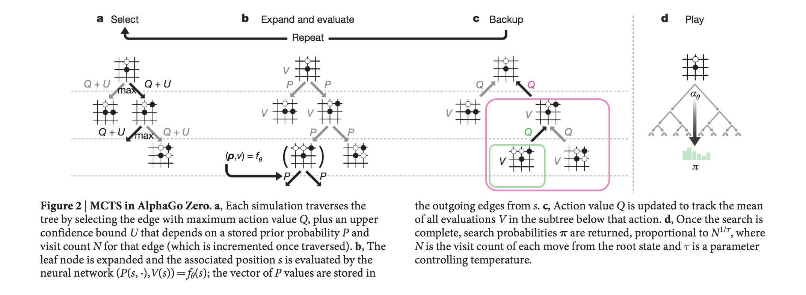

第13回
ディープラーニングの心理学的解釈 (心理学特講IIIA)


2.11. 画像と言語との融合へ向けて
以上で今回の特別企画の目標である画像と言語とのマルチモーダル統合へ向けての準備がほぼ出揃いました。 2014 年に提案されたニューラル画像脚注付けのモデルを下図に示します。

[@2014Vinyals_Bengio_Show_and_Tell]
画像に対して注意を付加した脚注付けモデルの出力例を下図に示します。
各画像対は右が入力画像であり，左はその入力画像の脚注付けである単語を出力している際にどこに注意しているのかを白色で表しています。
 </br>
[@2015Xu_Bengio_NIC_attention]
</br>
[@2015Xu_Bengio_NIC_attention]
3. 意味論
ここでは意味論の研究史を心理学関連領域に絞ってまとめることを試みます。
意味についての言及は言語学者 Firth さらに遡れば Witgenstein まで辿ることが可能です。 ですがここでは直接関連する研究として以下をとりげます
- 第 1 世代 意味微分法 Osgood
- 第 2 世代 潜在意味解析 Ladauer
- 第 3 世代 潜在ディレクリ配置，トピックモデル
- 第 4 世代 分散埋め込みモデル word2vec とその後継モデル
- 最近の展開
3.1. 1952 年 意味微分法 Semantics Differential (SD)
チャールズ・オズグッドによって提案された意味微分法は，被験者に対象を評価させる際に形容詞対を用います。 形容詞対は 5 件法あるいはその他の変種によって評価されます。 得られた結果を 評価対象 X 形容詞対の行列にします。 すなわち評価対象者の平均を求めて得た行列を 固有値分解，正確には因子分析 FA を行います。 最大固有値から順に満足の行くまで求めます。 固有値行列への射影行列を因子負荷量と呼びます。得られた結果を下図に示しました。

From Osgood (1952) Tab. 1
上図では，50 対の形容詞対によって対象を評価した値が描かれています。
因子分析(FA) 形容詞対による多段階評定

From Osgood (1952) Fig.2
意味微分法においては，研究者の用意した形容詞対の関係に依存して対象となる概念やモノ，コトが決まります。 従って研究者の想定していない概念空間については言及できないという点が問題点として指摘できます。
このことは評価対象がよくわかっている問題であれば精度良く測定できるという長所の裏返しです。
一般的な意味，対象者が持っている意味空間全体を考えるためには，50 個の形容詞対では捉えきれないことも意味します。従って以下のような分野に適用する場合には問題が発生する可能性があると言えます
- 神経心理学的な症状である 意味痴呆 semantic dimentia を扱う場合
- 入試問題などの一般知識を評価したい場合
- 一般言語モデルを作成する場合
3.2. 1997 年 潜在意味分析 Latent Semantic Analysis (LSA, LSI)
- 潜在意味分析: 特異値分解(SVD) は，当時増大しつつあったコンピュータ計算資源を背景に一般意味論に踏み込む先鞭をつけたと考えることができます。
すなわち先代の意味微分法が持つ問題点である，評価方法が 50 対の形容詞であること， 50 をいくら増やしても，結局は研究者の恣意性が排除できないこと，評価者が人間であるため大量の評価対象を評価させることは， 心理実験参加者の拘束時間を長くするため現実的には不可能であることを解消するために，辞書そのものをコンピュータで解析するという手法を採用しました。
- 辞書の項目とその項目の記述内容とを考えます
- 特定の辞書項項目にはどの単語が使われているいるのかという共起行列 内容 $\times$ 単語 を 考え，この行列について 特異値分解 を行います。
Osgood の意味微分法で用いられた行列のサイズと比較すると，単語数が数万，項目数は数万から数十万に増加しています。 数の増加は網羅する範囲の拡大を意味します。 下図は持ちられたデータセット例を示したものです。

From Landauer and Duman (1997) Fig. A2
LSA (LSI) の問題点としては以下図を見てください

From Landauer and Dumas (1997) Fig.3
上図は，得られた結果を元に類義語テストを問いた場合に特異値分解で得られる次元数を横軸に，正解率を縦軸にプロットした図です。 次元を上げると成績の向上が認められます。 ですが，ある程度 300 以上の次元を抽出しても返って成績が低下することが示されています。
次元数を増やすことで本来の類義語検査に必要な知識以外の情報が含まれてしまうため推察されます。
3.3. 2003 年 潜在ディレクリ配置 Latent Direchlet Allocation (LDA)
潜在ディレクリ配置 Latent Direchlet Allocation: LDA1 は LSA (LSI) を確率的に拡張したモデルであると考えることができます。すなわち LDA では単語と項目との関係に確率的な生成モデルを仮定します。
その理由としては，対象となる項目，しばしば トピック と言い表すと，項目の説明に用いられる単語との間に，決定論的な関係を仮定しないと考えることによります。確率的な関係を仮定することにより柔軟な関係をモデル化が可能であるからです。
例えば，ある概念，話題(トピック) “神経” を説明する場合を考えます。 “神経” を説明するには多様な表現や説明が可能です。 “神経” を説明する文章を数多く集めてると，単語 “脳” は高頻度で出現すると予想できます。 同様にして “細胞” や “脳” も高頻度で観察できるでしょう。ところが単語 “犬” は低頻度でしょう。 単語 “アメフラシ” や “イカ” は場合によりけりでしょう。どちらも神経生理学の発展に貢献した実験動物ですから単語 “アメフラシ” や “イカ” が出現する文章もあれば，単語 “脳梗塞” や単語 “失語” と同時に出現する確率もありえます。 このように考えると確率的に考えた方が良い場合があることが分かります。
ディレクリ分布
もう一点，ノンパラメトリックモデルについて説明します。 parametric model はパラーメータを用いたモデルほどの意味です。 心理統計学の古典的な教科書では，ノンパラメトリック検定とは母集団分布のパラメータに依存 しない 統計的検定という意味で用いられます。一方 LDA の場合には推定すべき分布のパラメータ(の数)を 事前に定めない という意味で ノンパラメトリック なモデルであると言います。 すなわちある話題(トピック)とそれを説明する単語の出現確率について，取り扱う現象の複雑さに応じてモデルを記述するパラメータ数を適応的に増やして行くことを考えます。
数学的既述は省略しますが，ベータ分布 を用いると区間 $[a,b]$ の間をとる分布でパラメータにより分布が柔軟に記述できます。ベータ分布の多次元拡張を ディククリ分布 と言います。
確率空間に対して一定の成約を付した表現をシンプレックスと言ったりします。 たとえばじゃんけんで対戦相手が，グー，チョキ，パー のいずれかを出す確率は，2 つが分かれば 3 つ目の手は自ずと分かってきます。このような関係は 3 つの手の確率分布でディククリ分布として扱うことが可能です。 下図はウィキペディアから持ってきました。この図はそのようなじゃんけんの手の出現確率をディレクリ分布として表現した例だと思ってください。

多次元ディレクリ分布(多次元ベータ分布)</a> によるノンパラメトリック推定
図は <https://en.wikipedia.org/wiki/Dirichlet_distribution> より
トピック毎の単語の出現確率も上図と同じ枠組みで記述することが可能です。かつ，上図ではとりうる値が 3 つの場合ですが，話題が複雑になれば適応的に選択肢の数，すなわちディレクリ分布の次元数が増加することになります。
プレート表記
あらかじめ定められた数のパラメータを用いて分布を記述するのではなく， 解くべき問題の複雑さに応じて適応的にパラメータ数を定めることに対応して， LDA あるいはトピックモデルの図示方法として プレート表記 plate notation があります。 下図にプレート表記の例を示しました。
 </br>
プレート表記: ノンパラメトリックモデルの表現に用いられる
</br>
プレート表記: ノンパラメトリックモデルの表現に用いられる
- 丸は確率変数
- 矢印は確率的依存関係を表現
- 観測変数は影付き(文献によっては二重丸)
- プレートは繰り返しを表す
Y からパラメータ X が生成される場合，矢印を使ってその依存関係を表現します。ノンパラメトリックモデルの場合，矢印の数を予め定めません。そのため矢印を多数描くのが煩雑なので，一つの箱代用して表現します。 これがプレート表記になります。
観測可能な変数をグレー，または二重丸で表し，観測不能な，類推すべきパラメータを白丸で表記します。 実際には観測不可能な潜在パラメータを観測データから類推することになります。
大まかなルールとして，潜在変数をギリシャアルファベット表記，観測される変数はローマアルファベット表記の場合が多いですが，一般則ですので例外もあります。
下図に潜在ディレクリ配置 LDA のプレート表記を示しました。
 </br>
</br>
トピックと単語の関係
トピックモデルの要点をまとめた下図はこれまでの説明をすべて含んでいます。
 </br>
</br>
出典: ブライのスライド(2009)より，文章は話題(トピック)の混合</br> 各文章はその話題から文章が生成されたと考える
興味深い応用例として Mochihashi ら(2009) の示した教師なし学習による日本語分かち書き例を示します。 下図は源氏物語をトピックモデルにより分かち書きさせた例です。どこに空白を挿入すると文字間の隣接関係を表現できるかをトピックモデルで解くことを考えた場合，空白の挿入位置が確率的に定まると仮定して居ます。
 </br>
</br>
Mochihashi らは，ルイス・キャロルの小説 “不思議の国のアリス” 原文から空白を取り除き， 文字間の隣接関係から文字の区切り，すなわち空白を推定することを試みました。結果を下図に示しました。
 </br>
</br>
原著論文
R による実装
- https://cran.r-project.org/web/packages/lda/index.html
- https://cran.r-project.org/web/packages/topicmodels/index.html
3.4. 2013 年 word2vec, 単語埋め込み, ベクトル埋め込みモデル
{kind=link}
{kind=link}
- ミコロフは word2vec によりニューラルネットワークによる意味実装を示しました。 ワードツーベックと発音します。 Word2vec は実装に 2 種類あリます。それぞれ CBOW と skip-gram と命名されています。 “シーボウ” または “シーバウ” と日本人は言ったりすることが多いようです。
有名な “king” - “man” + “woman” = “queen” のアナロジーを解くことができると喧伝されました。
下図左は意味的なアナロジーがベクトルの向きとして表現されていることに注目してください。 ベクトルは方向と大きさを持っている矢印で表現されます。矢印の原点を移動する ことを考えます。たとえば “MAN” から “WOMAN” へ向かう矢印を平行移動して “KING” まで 持ってくると，その矢印は “QUEEN” を重なることが予想できます。 これがアナロジー問題の解放の直感的説明になります。

上図右は同じ word2vec でできた空間に対して，統語関係 syntax を解かせた場合を示しています。 “KING” から “KINGS” へ向かう矢印を “QUEEN” まで持ってくると “QUEENS” に重なる ことが見て取れます。
このことから上図右の赤矢印で示されたベクトルは 複数形 への変換という統語情報， 文法情報を表現しているとみなすことが可能です。
伝統的な言語学の知識では，統語構造と意味構造は別個に取り組む課題であると考えられてきました。 ところが word2vec が示す意味空間はそのような区別を考える必要があるのか否かについて 問題を提起しているように思われます。
逆に一つのモジュールで処理することができるのであれば，分割して扱う意味があるのかどうかを考える切っ掛けになると考えます。
もう一つ面白い結果を下図に示します。下図は word2vec によって世界の国とその首都との関係を主成分分析 PCA で 2 次元に描画した図です。

横軸は国と首都との関係を表現しているとみなすことができます。縦軸は下から上に向かって おおまかにユーラシア大陸を西から東へ横断しているように配置されています。 意味を表現するということは，解釈によって，この場合 PCA によって 2 次元に図示してみると 大まかに我々の知識を表現できることを示唆していると考えます。
word2vec の実装には 2 種類あります。どちらを使っても同じような結果を得ることができます。
- CBOW: Continous Bog of Words 連続単語袋
- skip-gram: スキップグラム
両者は反対の関係になります。下図を参照してください。

From Mikolov (2013) Fig. 1
CBOW も skip-gram も 3 層にニューラルネットワークです。その中間層に現れた表現を ベクトル埋め込みモデル あるいは 単語埋め込みモデル と言ったりします。
- CBOW モデルは周辺の単語の単語袋詰め表現から中央の単語を予測するモデルです。
- skip-gram は中心の単語から周辺の単語袋詰表現を予測するモデルです。
たとえば，次の文章を考えます。
["彼", "は", "意味論", "を", "論じ", "た"]
表記を簡潔にするため各単語に ID をふることにします。
{"彼":0, "は":1, "意味論":2, "を":3, "論じ":4, "た":5}
すると上記例文は
[0, 1, 2, 3, 4, 5]
と表現されます。 ウィンドウ幅がプラスマイナス 2 である CBOW モデルでは 3 層の多層パーセプトロン の入出力関係は，入力が 4 次元ベクトル，出力も 4 次元ベクトルとなります。 文の境界を無視すれば，以下のような入出力関係とみなせます。
[0,1,1,0,0,0] -> [1,0,0,0,0,0] # In:"は","意味論" Out:"彼"
[1,0,1,1,0,0] -> [0,1,0,0,0,0] # In:"彼","意味論","を" Out:"は"
[1,1,0,1,1,0] -> [0,0,1,0,0,0] # In:"彼","は","を","論じ" Out:"意味論"
[0,1,1,0,1,1] -> [0,0,0,1,0,0] # In:"は","意味論","論じ","た" Out:"を"
[0,0,1,1,0,1] -> [0,0,0,0,1,0] # In:"意味論","を","た" Out:"論じ"
[0,0,0,1,1,0] -> [0,0,0,0,0,1] # In:"を","論じ" 出力:"た"
を学習することとなります。
- CBOW にせよ skip-gram にせよ大規模コーパス，例えばウィキペディア全文を用いて訓練を行います。周辺の単語をどの程度取るかは勝手に決めます。
- Mikolov が類推に用いたデータ例を下図に示しました。国名と対応する首都名，国名とその通貨名，などは意味的関係です。一方罫線下方は文法関係です。 形容詞から副詞形を類推したり，反意語を類推したり，比較級，過去分詞，国名と国民，過去形，複数形，動詞の 3 人称単数現在形などです。

From Milolov (2013) Tab. 1
- しばしば，神経心理学や認知心理学では，それぞれの品詞別の処理を仮定したり，意味的な脱落を考えたりする場合に，異なるモジュールを想定することが行われます。
- それらの仮定したモジュールが脳内に対応関係が存在するのであれば神経心理学的には説明として十分でしょう。
- ところが word2vec で示した表現では一つの意味と統語との表現を与える中間層に味方を変える (PCA など)で描画してみれば，異なる複数の言語知識を一つの表象で表現できることが示唆されます。
- word2vec による表現が脳内に分散していると考えるとカテゴリー特異性の問題や基本概念優位性の問題をどう捉えれば良いのかについて示唆に富むと考えます。
日本語のウィキペディアを用いた word2vec と NTT 日本語の語彙特性との関連に関心のある方は 日本語 Wikipedia の word2vec 表現と語彙特性との関係, 近藤・浅川 (2017) をご覧ください
さらなる蘊蓄 負例サンプリング
Word2vec を使って大規模コーパスを学習させる際に，学習させるデータ以外に全く関係のない組み合わせをペナルティーとして与えることで精度が向上します。
発展 文章埋め込みモデルへ
単語の word2vec による表現は 3 層パーセプトロンの中間層の活性値として表現されます。
単語より大きなまとまりの意味表現，たとえば，文，段落，などの表現をどのように得るのかが問題になります。 ここで詳細には触れませんが，文表現ベクトルは各単語表現の総和であると考えるのがもっとも簡単な表現になります。 すなわち次文:
["彼", "は", "意味論", "を", "論じ", "た"]
の文表現を得るためには，各単語の word2vec 表現を足し合わせることが行われます。 ただし，単純に足し合わせたのでは BOW 単語袋表現と同じことですので，単語の順序情報が失われていることになります。 この辺りをどう改善すれば良いのかが議論されてきました。
文献
- word2vec オリジナル論文 2013年 Mikolov
- fastText 高速文埋め込みモデル
- その発展 浅川, 岡, 楠見 (2018)
Seq2sep 翻訳モデル
中間層の最終時刻の状態に文表現が埋め込まれているとすると，これを応用するば 機械翻訳 や 対話 のモデルになる。 初期の翻訳モデルである “seq2seq” の概念図を示した。 “eos” は文末 end of sentence を表す。 中央の “eos” の前がソース言語であり，中央の “eos” の後はターゲット言語の言語モデルである単純再帰型ニューラルネットワークの中間層への入力として用いられる。
注意すべきは，ソース言語の文終了時の中間層状態のみをターゲット言語の最初の中間層の入力に用いることであり， それ以外の時刻ではソース言語とターゲット言語は関係がない。 逆に言えば最終時刻の中間層状態がソース文の情報全てを含んでいるとみなすことが可能である。 この点を改善することを目指すことが 2014 年以降盛んになった。 顕著な例が後述する 双方向 RNN, LSTM を採用したり，注意 機構を導入することであった。

Sutskever et. al (2014) Sequence_to_Sequence, Fig. 1


Sutskever et. al (2014) Sequence_to_Sequence, Fig. 2
トランスフォーマー が提唱した 自己注意
専門用語としては，多頭=自己注意 Multi-Head Self-Attention (以下 MHSA と表記)と呼びます。 多頭とは何か，なぜ 自己 がつく注意なのかを確認してください。


Left: [@2017Vaswani_transformer], Right: [@2019Ramachandran_attention_vision]
- 上図，クエリ，キー，バリュー に注目してください。
- 英単語の意味どおりに解釈すれば，問い合わせ，キー（鍵），値，となります。
- つまり，ある問い合わせに対して，キーを与えて，その答えとなる値を得ること。
- この操作を入力情報から作り出して答えを出力する仕組みに，ワンホット表現を使うことがポイント
下図左は上図右と同じものです。この下図右を複数個束ねると下図中央になります。
- 下図中央の Scaled Dot-Product Attention と書かれた右脇に小さく h と書かれています。
- この h とは ヘッド の意味です。
- 下図中央を 1 つの単位として，次に来る情報と連結させます。これが下図右です。
- 先週のリカレントニューラルネットワークでは，中間層の状態が次の時刻の処理に継続して用いられていました。
- ところが 多頭=自己注意 MHSA では一つ前の入力情報を，現在の時刻の情報に対するクエリとキーのように扱って情報を処理します。
- 下図右の下から入力される情報は，input と output と書かれています。さらに output の下には (Shifted right) と書かれています。すなわち，時系列情報を一時刻分だけ右にずらし（シフト）させて逐次情報を処理することを意味しています。
- 下図右の下から入力される情報は，embedding つまり埋め込み表現 と 位置符号化 position embedding が足し合わされたものです。埋め込み表現とは先週 word2vec で触れたベクトルで表現された，単語（あるいはそれぞれの項目）の 意味表現 に対応します。


少しだけまとめると:
- 自然言語処理，画像処理，強化学習，メタ学習の 4 分野でほほ同様の 多頭自己注意 MHSA が取り入れられている。
- クエリ，キー，バリュー の重みを学習することが MHSA の学習である。
- 従来手法である 畳み込み や LSTM を MHSA で置き換える動きがある。
BERT の特徴
- 上記のトランスフォーマーに基づいて BERT が提案されました。
- BERT は Bidirectional Encoder Representations from Transformers から命名したと原著論文には書いてあります。
- ですが，この原著論文の直前に提案されたモデルに ELMo があったため，こじつけた，ふざけた命名でしょう。
- もちろん ELMo (こちらは Embeddings from Language Models から命名されました)も BERT もセサミストリートに出てくるキャラクタです。
BERT の特徴を 3 つにまとめると以下の通り
- トランスフォーマー Transformer に基づく 多頭自己注意 (MHSA) を使った多層ニューラルネットワークモデル
- 2 つの事前訓練: マスク化言語モデル と 次文予測課題 を用いる
- 事前訓練済のモデルを用いて，解くべき課題のそれぞれについて ファインチューニング Fine tuning を施す
- 個別の課題は下流課題 down stream tasks と呼ばれます。上流 と 下流 との区別は，最初に行う事前訓練のことを時間的に先行するので上流，その後のファインチューニングするそれぞれの課題のことを下流課題と呼んでいます。
- 複数の課題に対して個別にファインチューニングを行うことにより，複数の下流課題で性能向上が認められました。 GLUE スコアボード, SuperGLUE を参照してください。
BERT の入力表現
- 上の図にもあったとおり BERT では入力情報が埋め込み表現だけでなく，位置符号化器の情報が加算されます。
- BERT では，埋め込み表現と位置符号化器の情報に加えて，セグメント埋め込み segment embeddings も加えた情報が入力情報となります。下図参照

埋め込みトークンの総和，位置符号器，分離埋め込みの 3 者 From [@2018BERT] Fig. 2
- 上図では，下 3 行が入力情報を構成する 3 つの要素になっています。上（ピンク色）が合算した入力情報になります。
- 3 つの入力情報とはそれぞれ，下から 位置符号化器 （薄灰色），セグメント埋め込み (淡緑)，トークン埋め込み (淡黄) です。
位置符号器 Position encoders
- 上述のようにトランスフォーマーの入力には，単語埋め込み表現に加えて，位置符号器の信号も加算されます。
- 位置符号器による位置表現は，i 番目の位置情報をワンホット表現するのではなく，周波数領域に変換することで周期情報を表現する試みと見なすことができます。

位置符号化に用いられる符号化。位置情報を周波数情報へ変換して用いています。
-
位置情報を周波数情報へ変換することが良いことなのか，どうなのか，は議論されている最中です。 一つの研究テーマでもあります。
-
数学的な説明は フーリエ変換 を調べてください。任意の関数 y=f(x) では x は位置情報を表しているとみなすことができます。 従って，位置 x を与えると対応する値 y が得られることを表している式が y=f(x) です。 これに対して，任意の情報は周波数，すなわち，波の重ね合わせとして表現できます。 すべての周波数を重ね合わせると元の関数になります。 反対に，ある周波数の値は，関数 f(x) を周波数へ変換したときの特定の周波数成分として表現できます。
BERT における位置符号化器は位置情報を波の成分として表現したことになります。
このようにしてできた値を入力側と出力側で下図のように連結させたものが以下のトランスフォーマーです。

From [@2017Vaswani_transformer] Fig. 1
これまで見てきたように，トランスフォーマーでは入力信号に基づいて情報の変換が行なわれる。 この意味ではトランスフォーマーにおける 多頭 自己注意 MHSA とはボトムアップ注意の変形であるとみなしうる。 逆言すれば，RNN のように過去の履歴をすべて保持しているわけではないので，系列情報については，position encoders に頼っている側面が指摘できる。
BERT の事前訓練: マスク化言語モデル
全入力系列のうち 15% をランダムに [MASK] トークンで置き換える
- 入力はオリジナル系列を [MASK] トークンで置き換えた系列
- ラベル: オリジナル系列の [MASK] 部分にの正しいラベルを予測
- 80%: オリジナル入力系列を [MASK] で置換
- 10%: [MASK] の位置の単語をランダムな無関連語で置き換える
- 10%: オリジナル系列
BERT の事前訓練: 次文予測課題
言語モデルの欠点を補完する目的，次の文を予測
[SEP] トークンで区切られた 2 文入力
- 入力: the man went to the store [SEP] he bought a gallon of milk.
- ラベル: IsNext
- 入力: the man went to the store [SEP] penguins are flightless birds.
- ラベル: NotNext
BERT: ファインチューニング
(a), (b) は文レベル課題， (c),(d)はトークンレベル課題, E: 入力埋め込み表現, $T_i$: トークン $i$ の文脈表象。

From [@2018BERT] Fig.3
GLUE: General Language Understanding Evaluation
- CoLA: 入力文が英語として正しいか否かを判定
- SST-2: スタンフォード大による映画レビューの極性判断
- MRPC: マイクロソフトの言い換えコーパス。2文 が等しいか否かを判定
- STS-B: ニュースの見出し文の類似度を5段階で評定
- QQP: 2 つの質問文の意味が等価かを判定
- MNLI: 2 入力文が意味的に含意，矛盾，中立を判定
- QNLI: 2 入力文が意味的に含意，矛盾，中立を判定
- RTE: MNLI に似た2つの入力文の含意を判定
- WNI: ウィノグラッド会話チャレンジ
その他
- SQuAD: スタンフォード大による Q and A ウィキペディアから抽出した文
- RACE: 中学入試，高校入試に相当するテスト多肢選択回答
BERT モデルの詳細
- データ: Wikipedia (2.5B words) + BookCorpus (800M words)
- バッチサイズ: 131,072 words (1024 sequences * 128 length or 256 sequences * 512 length)
- 訓練時間: 1M steps (~40 epochs)
- 最適化アルゴリズム: AdamW, 1e-4 learning rate, linear decay
- BERT-Base: 12 層, 各層 768 ニューロン, 12 多頭注意
- BERT-Large: 24 層, 各層 1024 ニューロン, 16 多頭注意
- 4x4 / 8x8 TPU で 4 日間
CoLA サンプル
1 は正しい英文，0 は非文
- 1 They drank the pub dry.
- 0 They drank the pub.
- 1 The professor talked us into a stupor.
- 0 The professor talked us.
- 1 We yelled ourselves hoarse.
- 0 We yelled ourselves.
SST-2 サンプル
0 は低評価，1 は高評価
- hide new secretions from the parental units 0
- contains no wit , only labored gags 0
- that loves its characters and communicates something rather beautiful about human nature 1
- remains utterly satisfied to remain the same throughout 0
- on the worst revenge-of-the-nerds clichés the filmmakers could dredge up 0
- that’s far too tragic to merit such superficial treatment 0
MRPC サンプル
- 1
- 文1: “Please, keep doing your homework,” said Bavelier, the mother of three.
- 文2: “Please, keep doing your homework,” said Bavelier, the mother of 6-year-old twins and a 2-year old.
- 1
- 文1: While Mr. Qurei is widely respected and has a long history of negotiating with the Israelis, he cannot expect such a warm welcome.
- 文2: While Qureia is respected and has a history of negotiating with the Israelis, a warm welcome is not expected.
- 1
- 文1: “Nobody wants to go to war with anybody about anything … it ‘s always very much a last resort thing and one to be avoided,” Mr Howard told Sydney radio.
- 文2: “We don’t want to go to war with anybody . . . it’s always very much a last resort, and one to be avoided.
- 0
- 文1: GMT, Tab shares were up 19 cents, or 4.4% , at A $4.56, having earlier set a record high of A $4.57.
- 文2: Tab shares jumped 20 cents, or 4.6%, to set a record closing high at A $4.57.
- 0
- 文1: Martin, 58, will be freed today after serving two thirds of his five-year sentence for the manslaughter of 16-year-old Fred Barras.
- 文2: Martin served two thirds of a five-year sentence for the manslaughter of Barras and for wounding Fearon.
SST-B サンプル
最後の数値が評価値
- A plane is taking off. An air plane is taking off. 5.000
- A man is playing a large flute. A man is playing a flute. 3.800
- A man is spreading shreded cheese on a pizza. A man is spreading shredded cheese on an uncooked pizza. 3.800
- Three men are playing chess. Two men are playing chess. 2.600
- A man is playing the cello. A man seated is playing the cello. 4.250
- Some men are fighting. Two men are fighting. 4.250
- A man is smoking. A man is skating 0.5000
QQP サンプル
0 は異なると判断， 1 は同じと判断すべき文
- 0
- How is the life of a math student? Could you describe your own experiences?
- Which level of prepration is enough for the exam jlpt5?
- 1
- How do I control my horny emotions?
- How do you control your horniness?
- 0
- What causes stool color to change to yellow?
- What can cause stool to come out as little balls? 0
- 1
- What can one do after MBBS?
- What do i do after my MBBS?
- 0
- Where can I find a power outlet for my laptop at Melbourne Airport?
- Would a second airport in Sydney, Australia be needed if a high-speed rail link was created between Melbourne and Sydney?
- 0
- How not to feel guilty since I am Muslim and I’m conscious we won’t have sex together?
- I don’t beleive I am bulimic, but I force throw up at least once a day after I eat something and feel guilty. Should I tell somebody, and if so who?
MNLI サンプル
- 矛盾
- Met my first girlfriend that way.
- I didn’t meet my first girlfriend until later.
- 中立
- 8 million in relief in the form of emergency housing.
- The 8 million dollars for emergency housing was still not enough to solve the problem.
- 中立
- Now, as children tend their gardens, they have a new appreciation of their relationship to the land, their cultural heritage, and their community.
- All of the children love working in their gardens.
- 含意
- At 8:34, the Boston Center controller received a third transmission from American 11
- The Boston Center controller got a third transmission from American 11.
- 中立
- I am a lacto-vegetarian.
- I enjoy eating cheese too much to abstain from dairy.
- 矛盾
- someone else noticed it and i said well i guess that’s true and it was somewhat melodious in other words it wasn’t just you know it was really funny
- No one noticed and it wasn’t funny at all.
事前訓練とマルチ課題学習

From [@2019Liu_mt-dnn] Fig. 1
多言語対応

From [@2019Lample_Cross-lingual] Fig. 1
BERT の発展

From <https://towardsdatascience.com/a-review-of-bert-based-models-4ffdc0f15d58>
BERT: ファインチューニング手続きによる性能比較

マスク化言語モデルのマスク化割合の違いによる性能比較
マスク化言語モデルのマスク化割合は マスクトークン:ランダム置換:オリジナル=80:10:10 だけでなく， 他の割合で訓練した場合の 2 種類下流課題， MNLI と NER で変化するかを下図 \ref{fig:2019devlin_mask_method21} に示した。 80:10:10 の性能が最も高いが大きな違いがあるわけではないようである。
BERT: モデルサイズ比較

モデルのパラメータ数による性能比較
パラメータ数を増加させて大きなモデルにすれば精度向上が期待できる。 下図では，横軸にパラメータ数で MNLI は青と MRPC は赤 で描かれている。 パラメータ数増加に伴い精度向上が認められる。 図に描かれた範囲では精度が天井に達している訳ではない。パラメータ数が増加すれば精度は向上していると認められる。
BERT: モデル単方向，双方向モデル比較

言語モデルの相違による性能比較
言語モデルをマスク化言語モデルか次単語予測の従来型の言語モデルによるかの相違による性能比較を 下図 \ref{fig:2019devlin_directionality19} に示した。 横軸には訓練ステップである。訓練が進むことでマスク化言語モデルとの差は 2 パーセントではあるが認められるようである。
BERT: 事前訓練比較

事前訓練の効果比較
図には事前訓練の比較を示しされている。 全ての事前訓練を用いた場合が青，次文訓練を除いた場合が赤，従来型言語モデルで次文予測課題をした場合を黄， 従来型言語モデルで次文予測課題なしを緑で描かれている。4 種類の下流課題は MNLI, QNLI, MRPC, SQuAD である。 下流のファインチューニング課題ごとに精度が分かれるようである。
各モデルの特徴
- RoBERTa: BERT の訓練コーパスを巨大 (173GB) にし，ミニバッチサイズを大きした
- XLNet: 順列言語モデル。2 ストリーム注意
- MT-DNN: BERT ベース の転移学習に重きをおいたモデル
- GPT-2: BERT に基づく。人間超えして 2019 年 2 月時点で炎上騒ぎ
- BERT: Transformerに基づく言語モデル。マスク化言語モデル と 次文予測 に基づく 事前訓練，各下流課題をファインチューニング。事前訓練されたモデルは一般公開済。
- DistillBERT: BERT の蒸留版
- ELMo: 双方向 RNN による文埋め込み表現
- Transformer: 自己注意に基づく言語モデル。多頭注意，位置符号器.
BERT: 埋め込みモデルによる構文解析
BERT の構文解析能力を下図示した。 各単語の共通空間に射影し， 単語間の距離を計算することにより構文解析木と同等の表現を得ることができることが報告されている[@2019HewittManning_structural]。


 BERT による構文解析木を再現する射影空間
BERT による構文解析木を再現する射影空間
From https://github.com/john-hewitt/structural-probes
- word2vec において単語間の距離は内積で定義されていました。
- このことから，文章を構成する単語で張られる線形内積空間内の距離が構文解析木を与えると見なすことは不自然ではないと予想できます。
- そこで構文解析木を再現するような射影変換を見つけることができれば BERT を用いて構文解析が可能となるでしょう。
- 例えば上図における chef と store と was の距離を解析木を反映するような空間を見つけ出すことに相当します
具体的には，以下のような操作をしています:
- 文章に現れる全トークンを表すベクトルを BERT より求める。
- すなわち BERT 全中間層ユニット活性値から構成される全ての値から構成されるベクトル群
- 2 のベクトルが張る部分空間に全トークンを射影する。
- 3 の部分空間内でトークン間の距離を求める。
- 各トークンを短い順にグラフで結ぶ
BERT 実装
- BERT 実装のパラメータを以下に示した。
- 現在配布されている BERT-base あるいは性能が良い BERT-large は各層のニューロン数と全体の層数である。
- ソースコードの配布先は https://github.com/google-research/bert
-
オリジナルの論文は https://arxiv.org/abs/1810.04805
- データ: Wikipedia (2.5B words) + BookCorpus (800M words)
- バッチサイズ: 131,072 words (1024 sequences $\times$ 128 length or 256 sequences $\times$ 512 length)
- 訓練ステップ: 1M steps (40 epochs)
- 最適化アルゴリズム: AdamW, 1e-4 learning rate, linear decay
- BERT-Base: 12 層, 各層 768 ニューロン, 12 多頭注意
- BERT-Large: 24 層, 各層 1024 ニューロン, 16 多頭注意
- 訓練時間: 4x4 / 8x8 の TPU で 4 日間
LSTM との異同

左: LSTM (浅川, 2015) より，右: トランスフォーマー[@2017Vaswani_transformer]
入力ゲートと入力 は Q, K と同一視，出力ゲートと V とは同一視可能？
Relationship between self-attention and convolution


From [@2020cordonnier_attention_and_convolution]
まとめ
- MHSA は 畳み込み と同等の能力がありそうである。
- Reformer に見られるように position encodings を工夫する余地は残されているように思われる。
マルチタスク学習，転移学習
- 学習したことがらを応用することは賢さの尺度でしょう
たとえば，映画カラテキッド(1984)では，ミヤギ先生はダニエルさんに車のワックスがけや床掃除を教えました :-) ワックスがけや床磨きは空手の技術習得にとって必要な技能であったというオチです。
実習ファイル
- マルチタスク学習2
 {target=”_blank”}
{target=”_blank”} -
マルチタスク学習3
{target=”_blank”}- 画像脚注付け
{target=”_blank”}
- 類義語
 {target=”_blank”}
{target=”_blank”} - 類義画像
 {target=”_blank”}
{target=”_blank”} - 文章からの画像検索
- __犬__を検索
 {target=”_blank”}
{target=”_blank”} - 笑顔の少年 を検索
 {target=”_blank”}
{target=”_blank”}
- __犬__を検索
- 画像脚注付け
- マーガレット ミッチェルによるソーシャルメディアを用いたメンタルヘルスのマルチタスク学習{target=”_blank”}
- arXiv 論文{target=”_blank”}
- One neural network, many uses{target=”_blank”}
- ソースコード{target=”_blank”}
- An Overview of Multi-Task Learning in Deep Neural Networks{target=”_blank”}
- 上の arXiv{target=”_blank”}
Hard parameter sharing

左:マルチタスク学習, 右:転移学習, いずれも Sebastuan Ruder のブログより
Soft parameter sharing
In soft parameter sharing on the other hand, each task has its own model with its own parameters. The distance between the parameters of the model is then regularized in order to encourage the parameters to be similar. 8 for instance use the $l2$ norm for regularization, while 9 use the trace norm.

Recent work on MTL for Deep Learning
Deep Relationship Networks
 A Deep Relationship Network with shared convolutional and task-specific fully connected layers with matrix priors (Long and Wang, 2015).
A Deep Relationship Network with shared convolutional and task-specific fully connected layers with matrix priors (Long and Wang, 2015).
- Long, M., & Wang, J. (2015). Learning Multiple Tasks with Deep Relationship Networks. arXiv Preprint arXiv:1506.02117. Retrieved from http://arxiv.org/abs/1506.02117 ↩︎
Fully-Adaptive Feature Sharing

The widening procedure for fully-adaptive feature sharing (Lu et al., 2016).
Lu, Y., Kumar, A., Zhai, S., Cheng, Y., Javidi, T., & Feris, R. (2016). Fully-adaptive Feature Sharing in Multi-Task Networks with Applications in Person Attribute Classification. Retrieved from http://arxiv.org/abs/1611.05377
Cross-stitch Networks

Cross-stitch networks for two tasks (Misra et al., 2016).
Misra, I., Shrivastava, A., Gupta, A., & Hebert, M. (2016). Cross-stitch Networks for Multi-task Learning. In Proceedings of the IEEE Conference on Computer Vision and Pattern Recognition. https://doi.org/10.1109/CVPR.2016.433
A Joint Many-Task Model

A Joint Many-Task Model (Hashimoto et al., 2016).
Weighting losses with uncertainty

Uncertainty-based loss function weighting for multi-task learning (Kendall et al., 2017).
Kendall, A., Gal, Y., & Cipolla, R. (2017). Multi-Task Learning Using Uncertainty to Weigh Losses for Scene Geometry and Semantics. Retrieved from http://arxiv.org/abs/1705.07115
Sluice Networks

A sluice network for two tasks (Ruder et al., 2017).
Ruder, S., Bingel, J., Augenstein, I., & Søgaard, A. (2017). Sluice networks: Learning what to share between loosely related tasks. Retrieved from http://arxiv.org/abs/1705.08142
第 12 回 強化学習, 予測報酬誤差, ゲームAI, 経済学

AlphaGo の模式図，原著論文より 
AlphaGoZero のセルフプレイ，原著論文より
実習ファイル
- ランダム探索 {target=”_blank”}
- 方策勾配法 {target=”_blank”}
- SARSA {target=”_blank”}
- Q学習 {target=”_blank”}
- REINFORCE.js{target=”_blank”}
以下のデモは，OpenAI 提供の強化学習環境 gym を用いています。
- 倒立振子 (cartpole) {target=”_blank”}
Colaboratory 上で gym を 動作させるためには StarAI の開発したレンダリング環境 が必要です。
強化学習，条件付けの古典
- パブロフ (Ivan Petrovich Pavlov; 1849/Sep/14-1936/Feb/27)古典的条件づけ 1904 年ノーベル医学生理学賞
- スキナー (Burrhus Frederic Skinner; 1904/Mar/20-1990/Aug/18) 道具的条件付け， オペラント条件づけ，スキナー箱, Skinner(1938) Fig.1, page 39 より
- Sutton and Barto の強化学習 初版 1998年, 第2版 2018年, 初版は翻訳あり，第2版は pdf ファイルでダウンロード可能
{kind=link}
 Ian Pavlov
Ian Pavlov
 Burrhus Frederic Skinner
Burrhus Frederic Skinner
 Richard S. Sutton,
Richard S. Sutton,
 Andrew G. Barto
Andrew G. Barto
強化学習とは何か？

Sutton & Barto (2018) Fig. 3.2 を改変
強化学習という言葉は古い言葉ですが機械学習の文脈では， 環境とその環境におかれた動作主（エージェントと言ったり，ロボットシステムだったりします）が， 環境と相互作用しながらより良い行動を形成するためのモデルです。 動作主は，環境から受け取った現在の状態を分析して， 次にとるべき行動を選択します。このとき将来に渡って報酬が最大となるような行動を学習する手法の一つです。
2015 年には，Google傘下のデープマインドというスタートアップチームが開発した囲碁プログラムAlphaGoがプロ棋士のイ・セドル氏に勝利し話題になりました。 AlphaGo は強化学習を基本技術の一つとして用いています。
- 強化学習(1): 基礎
- 強化学習(2): エージェントと環境
- 強化学習(3): 目標と報酬
- 強化学習(4): マルコフ決定過程
- 強化学習(5): 価値反復，方策反復
- 強化学習(6):
- 強化学習(7):
- エージェントと環境，マルコフ決定過程 MDP，POMDP，効用関数，ベルマン方程式，探索と利用のジレンマ，SARSA:
- 価値，方策，Q 学習，モデルベース対モデルフリー，アクター=クリティック:
-
深層 Q 学習:
- ゲーム AI へ (AlphaGo，AlphaGoZero，OpenAI five):
- セルフプレイ:
- 最近の発展 A3C，Rainbow，RDT，World model:
複雑な状況をどう理解して解決するのか？
- 強化学習というニューラルネットワークモデルがあるわけではない
-
動的で複雑な環境に対処 $\rightarrow$ 強化学習 + DL $\rightarrow$ 一般人工知能への礎
- DQN ATARIのビデオゲーム, https://www.nature.com/articles/nature14236
- AlphaGo 囲碁, https://www.nature.com/articles/nature16961
- AlphaGoZero 囲碁, https://www.nature.com/articles/nature24270
Deep Q Network

DQNの模式図, 原著論文より
- Q 学習 Q learning に DNN を採用
- CNN が LeNet, @1998LeCun そうであったように，強化学習 RL も昔からの技術 @Sutton_and_Barto1998
- ではなぜ，今になって囲碁や自動運転に応用できるようになったのか？
- $\Rightarrow$ コンピュータの能力, データ規模，アルゴリズムの改良, エコシステム(ArXiv, Linux, Git, ROS, AMT, TensorFlow)
YouTube 上でのデモ動画
- ブロック崩し: https://www.youtube.com/watch?v=V1eYniJ0Rnk{target=”_blank”}
- スペースインベーダー: https://www.youtube.com/watch?v=W2CAghUiofY{target=”_blank”}
- DQN の動画 スペースインベーダー
-
伝統的な統計学においては Fischer の線形判別分析を LDA と表記します。ですがデータサイエンス，すなわち統計学の一分野では近年の潜在ディレクリ配置の成功により LDA と未定義で表記された場合には潜在ディクレクリ配置を指すことが多くなっています。 ↩